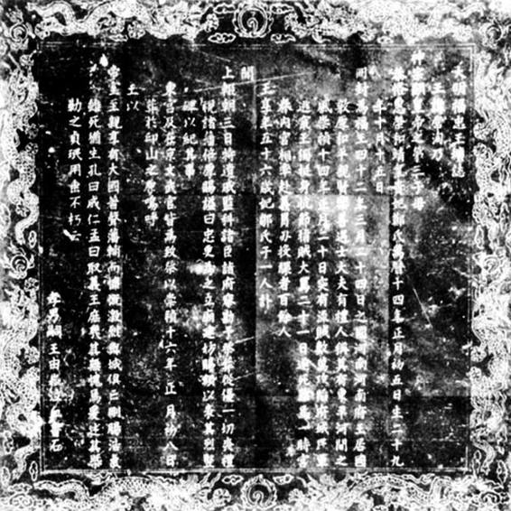
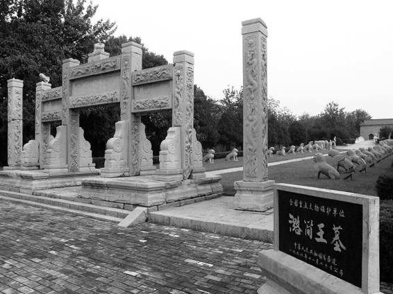

其实，他的存在有真实的一面。这种真实性，直到少年时代还很具体。他生于万历三十五年七月乙巳日，换成公历则是1607年9月5日。父亲是万历皇帝第三子、福王朱常洵，母亲姓姚。他的乳名叫福八，听上去容易误为朱常洵第八子，其实是长子，且别无兄弟。母亲姚氏大概死得早，后来被他从河南迎到南京的母后邹氏，并非本生母。他应该算北京人，不光生在那里，且一直长到七岁才离开。万历四十二年，经过久拖、耗费无数口舌乃至酿成宫廷谜案之后，万历皇帝终于决定福王去洛阳就藩。朱由崧在那里度过平静的二十七年，平静到没有多少消息，我们只知这段时间他先是受封为德昌王，后晋福王世子。对于乃父的生活，《明史》亦仅以“日闭阁饮醇酒，所好惟妇女倡乐”[2]一语蔽之。
经过二十来年的沉寂，崇祯十四年起，有关福王一家的记载突然又多了起来。原因是李自成攻陷洛阳，朱常洵惨死。这件事，让福王一家重回社会聚光灯下。二十年前，由于“三案”缘故，他们曾占据这样的位置，随着崇祯即位、钦定逆案，波澜平伏，事情渐渐过去，他们也淡出政治焦点，在洛阳过自己花天酒地的日子。而那个冬天，朱常洵被杀，且死得那样恐怖——尸身被分割，与鹿肉同煮，名为“福禄宴”——震惊了全国。作为最有钱势的亲王，朱常洵如此下场，无疑是深刻象征，而刺痛很多人的神经。深受打击的，包括崇祯皇帝本人。洛阳事变后，他派人四处找寻堂弟下落，当听到朱由崧流落民间、衣不蔽体的汇报，皇帝泫然泪下，专门拨银三万一千两，派司礼监王裕民送去。以当时国库的捉襟见肘，这笔钱已是巨款，从中可以体会崇祯内心浓厚的悲郁与恐惧。过了几个月，又颁旨朱由崧嗣福王位。

《大明福忠王圹志》
1924 年发现于河南孟津麻屯乡庙槐村南。福忠王即被闯军烹而食之的朱常洵，“忠”是谥号。立碑人即本文主人公、日后的弘光皇帝朱由崧。此碑该算福王父子留存于今极稀少的痕迹，但上面所谓“王独挺身抗节，指贼大骂”，“慷慨激烈，与城俱亡。刚肠浩气，虽死犹生”，却属瞎编。

潞简王陵
潞简王乃第一代潞王、朱常淓之父朱翊镠，与万历皇帝一母同胞，就藩河南卫辉府，1614 年薨，谥号“简”。因死在乱世前头，故还能建这样的陵墓。甲申年（1644）正月，朱由崧投卫辉朱常淓避难，然后从卫辉启程，逃往淮安。
随着洛阳之变，原来寂寂无闻的福世子开始受到舆论关注，他的逃脱，他的流浪，他的穷困，他的寄人篱下……频频见诸报道和记述。有关他的故事如此之多，大大超过他过去二十多年经历的总和。照理说，他的形象应该由此变得清晰和具体了，实际却刚好相反。他的确越来越多在各种传闻里被提及和曝光，但他究竟是怎样的人这一点，反而更加混乱。有关他的描述，充满了道听途说，在时间、地点和过程上淆乱不一。这明显是乱世的作用。比如，他如何从洛阳脱身，以及脱身后到卫辉依潞王朱常淓这段时间当中的行止，既不确定也不连贯，至今史家不能使之凿实、次第完述，都只能囫囵了事。这留下了许多疑点，而各种对他的怀疑也就趁隙而入，直至有真假福王之论。
到此回看其平生，也有趣得紧：幼年他的消息少而简单，但那时他的真实性反而不成问题；现在消息虽然越来越多，他却变得越来越不可靠。表面上，他愈益进入人们视野，实际却离大家越来越远。这颇像结构主义中所指与能指之间那种奇妙的关系，能指愈丰富，所指便愈模糊。朱由崧从福八而福王，从福王而弘光皇帝，在历史舞台上一步步由远而近，渐渐趋向最前台；但当他终于站在大家面前，大家反而不知道他究竟是谁。